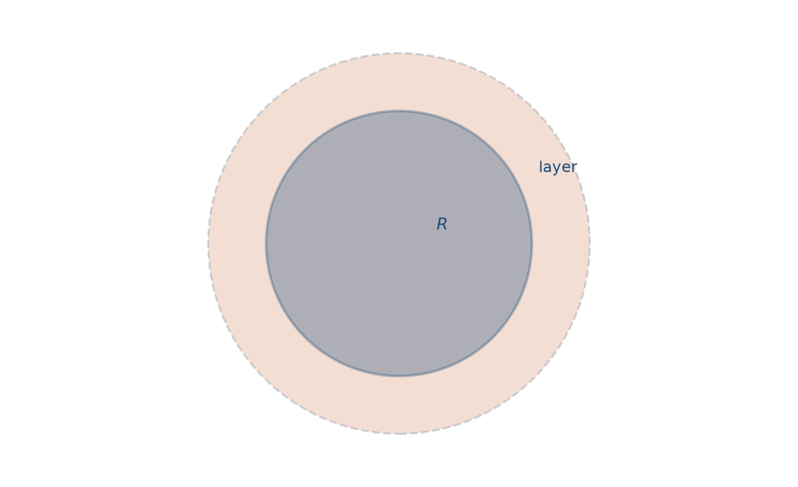
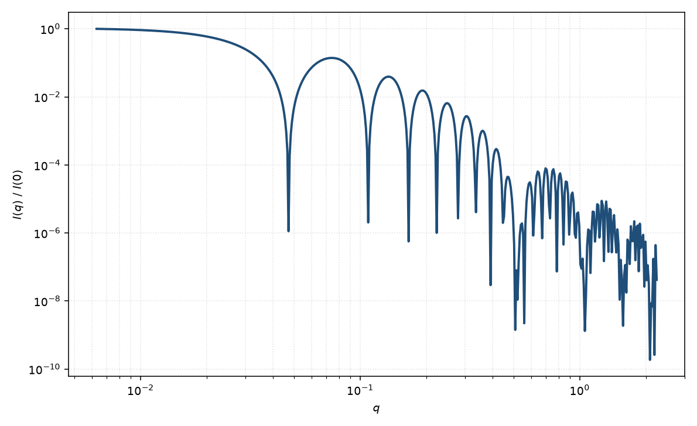

吸附层
adsorbed layer
适用场景
吸附层模型描述固体或胶乳球核表面吸附的聚合物、表面活性剂或蛋白质层。核本身可以是已知半径的胶体，未知量主要是层厚、层平均密度与是否溶剂渗透。适用于稳定剂层、刷状吸附、蛋白质冠（protein corona）的粗描述。
与核壳球的差别在于物理图像：层往往稀疏、浓度沿径向下降，而不是均匀壳。若层很密、边界锐，核壳球足够；若层是高斯链冠状，聚合物胶束更合适。本页取“球核 + 有限厚度吸附层”这一中间描述，公式上仍落在 Pedersen 综述的同心壳框架内。
物理图像
核提供已知（或强约束）的 Rayleigh 振幅；吸附层贡献外球与核球振幅之差，衬度是层平均 SLD 相对溶剂。层溶剂化使 $\rho_{\mathrm{layer}}$ 靠近溶剂，$I(q)$ 对层的敏感度下降——这正是吸附量低时 SAS 难测层厚的原因。
示意图


核心公式
出发点
稀释、取向无规时，相干散射振幅是衬度对平面波相位的体积分
$$F(\mathbf{q})=\int_V \Delta\rho(\mathbf{r})\,\mathrm{e}^{i\mathbf{q}\cdot\mathbf{r}}\,\mathrm{d}^3r.$$均匀吸附层取球对称、分段常数剖面：核 $r<R$ 为 $\rho_c$，层 $R\le r\le R+\delta$ 为平均 $\rho_L$，之外为溶剂 $\rho_{\mathrm{solv}}$。角积分后只剩径向正弦变换
$$F(q)=4\pi\int_0^{R+\delta} r^2\bigl[\rho(r)-\rho_{\mathrm{solv}}\bigr]\frac{\sin(qr)}{qr}\,\mathrm{d}r.$$推导
把积分拆成核与层两段。均匀球的原函数为 $\int_0^{R} r^2\sin(qr)/(qr)\,\mathrm{d}r=V(R)\Phi(qR)/4\pi$，其中 $V(R)=4\pi R^3/3$，$\Phi(x)=3(\sin x-x\cos x)/x^3$。于是
$$F(q)=(\rho_c-\rho_{\mathrm{solv}})V(R)\Phi(qR)+(\rho_L-\rho_{\mathrm{solv}})\bigl[V(R+\delta)\Phi\bigl(q(R+\delta)\bigr)-V(R)\Phi(qR)\bigr].$$合并 $\Phi(qR)$ 的系数，得到与核壳球同构的闭式
$$A(q)=(\rho_c-\rho_L)V(R)\Phi(qR)+(\rho_L-\rho_{\mathrm{solv}})V(R+\delta)\Phi\bigl(q(R+\delta)\bigr).$$稀疏层把层平均写成体积分数加权 $\rho_L=\phi_{\mathrm{pol}}\rho_{\mathrm{pol}}+(1-\phi_{\mathrm{pol}})\rho_{\mathrm{solv}}$，层衬度即 $\phi_{\mathrm{pol}}(\rho_{\mathrm{pol}}-\rho_{\mathrm{solv}})$，可用 $\phi_{\mathrm{pol}}$ 代替独立的层 SLD。稀释强度 $I(q)=n|A(q)|^2+B$。
低 $q$ 与渐近
$q\to 0$ 时 $\Phi\to 1$，超额散射长度
$$A(0)=(\rho_c-\rho_{\mathrm{solv}})V(R)+(\rho_L-\rho_{\mathrm{solv}})\bigl[V(R+\delta)-V(R)\bigr].$$与 Guinier $P=1-q^2 R_g^2/3+\cdots$ 比较，$R_g^2$ 由衬度的二阶矩给出：$R_g^2=(3/5)[(\rho_c-\rho_L)R^5+(\rho_L-\rho_{\mathrm{solv}})(R+\delta)^5]/[(\rho_c-\rho_L)R^3+(\rho_L-\rho_{\mathrm{solv}})(R+\delta)^3]$。层很稀时 $R_g$ 接近裸核的 $R\sqrt{3/5}$。
两套尖锐界面仍给出 Porod 包络 $\sim q^{-4}$，振荡因核、层半径不同而出现拍频。$\Phi(qR)=0$ 的根一般不再是强度的严格零点，因为层项不同时为零。
参数表
| 参数 | 符号 | 含义 | 单位 | 典型范围 |
|---|---|---|---|---|
| 核半径 | $R$ | 裸核半径 | Å 或 nm | 50–2000 Å |
| 层厚 | $\delta$ | 吸附层径向厚度 | Å | 10–200 Å |
| 层平均 SLD | $\rho_L$ | 层内聚合物+溶剂平均 | Å$^{-2}$ | 介于纯聚合物与溶剂之间 |
| 核 SLD | $\rho_c$ | 核散射长度密度 | Å$^{-2}$ | 常由组成固定 |
| 聚合物体积分数 | $\phi_{\mathrm{pol}}$ | 层内聚合物占有率 | 无量纲 | 0.01–0.5 |
拟合注意
$\delta$ 与 $\phi_{\mathrm{pol}}$（或 $\rho_L$）几乎完全简并：稀厚层与密薄层在有限 $q$ 上难以分辨。需要吸附量（mg m$^{-2}$）或对比变分才能拆开。核半径应尽量用裸核数据或电镜固定。
取向无关。若核为磁性颗粒、吸附层非磁，磁通道看到的半径小于核通道——这是确认“有机层在核通道里”的独立证据，须分别给出核磁 SLD 与核 SLD。
相近模型
- 核壳球 — 均匀密壳的同一振幅结构。
参考文献
- Pedersen, J. S. Analysis of small-angle scattering data from colloids and polymer solutions: modeling and least-squares fitting. J. Appl. Cryst. 1997, 30, 339–354. DOI: 10.1107/S0021889897002532
- Auvray, L.; Cotton, J. P. Self-similar structure of an adsorbed polymer layer: comparison between theory and scattering experiments. Macromolecules 1987, 20, 202–207. DOI: 10.1021/ma00167a030